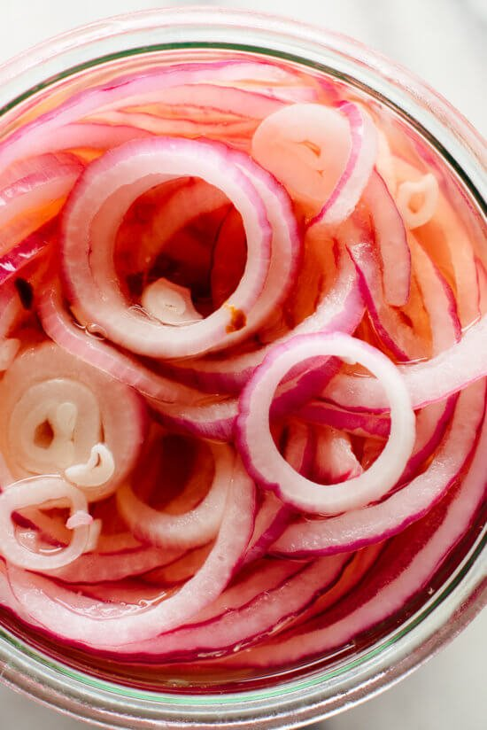

Easy pickled red onions

Pickling transforms raw red onions from pungent and crunchy to irresistibly tangy and crisp
These onions are the perfect condiment for tacos, burgers, salads, and more.
Ingredients
- 1 red onion
- 1/2 cup water
- 1/4 cup distilled white vinegar
- 1/4 cup apple cider vinegar
- 1.5 tbsp maple syrup
- 1.5 tsp salt
Steps
- Pack the onions into a 1-pint mason jar or similar heat-safe vessel. Place the jar in the sink, to catch any splashes of hot vinegar later.
- In a small saucepan, combine the water, both vinegars, maple syrup, salt, and pepper flakes. Bring the mixture to a gentle simmer over medium heat, then carefully pour the mixture into the jar over the onions.
- Use a butter knife or spoon to press the onions down into the vinegar and pop any air bubbles in the jar. Let the pickled onions cool to room temperature (about 20 to 30 minutes), at which point they should be sufficiently pickled for serving.
- Cover and refrigerate leftover pickled onions for later. Quick-pickled onions are best consumed within three days, but they keep for 2 to 3 weeks in the refrigerator.
Return to main page